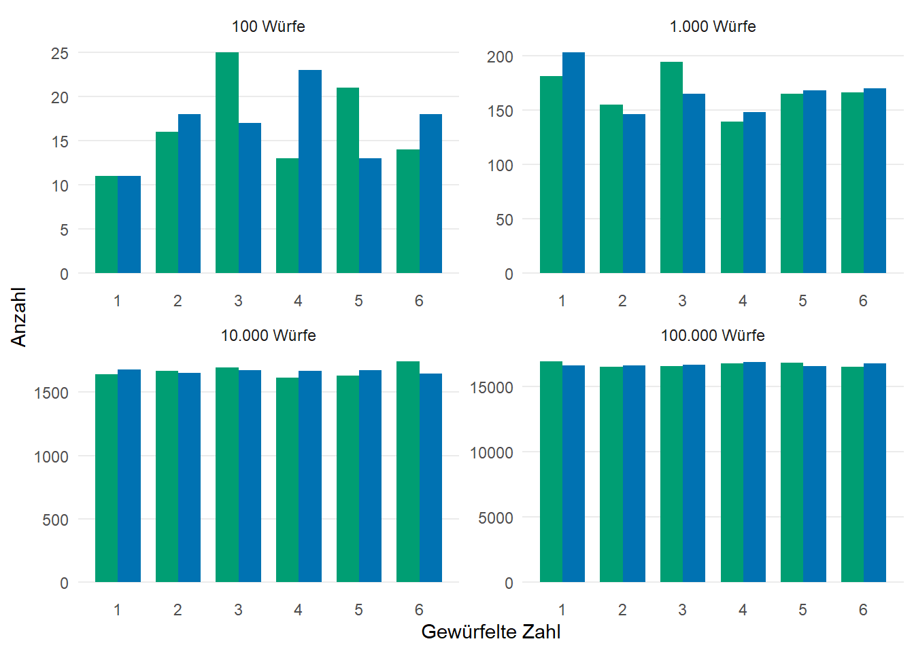
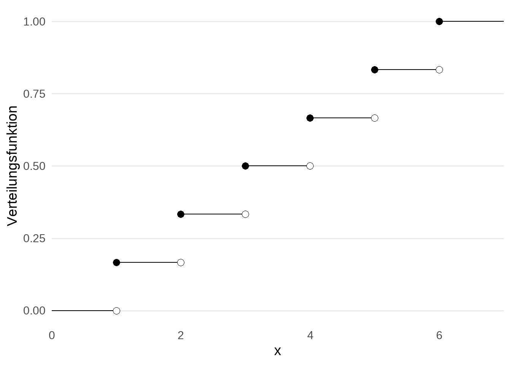

3 Zufallsvariablen
Im Jahr 1901 hat der italienische Mathematiker Mario Lazzarini das Buffonsche Nadelexperiment durchgeführt, um \(\pi\) zu approximieren. Angeblich baute er dafür eine Maschine, um eine Nadel 3408 mal zu werfen und zu zählen, wie oft die Nadel so fällt, dass sie ein Gitter aus parallelen Linien kreuzt.
Die theoretischen Grundlagen des Experiments sind unumstritten, jedoch werden Lazzarinis Ergebnisse teilweise bezweifelt1. Hauptkritik besteht in der Frage, ob die Anzahl der Versuche gerade so gewählt wurde, um die damalige Approximation \(\pi \approx \frac{355}{113}\) möglichst gut zu treffen. Außerdem wird daran gezweifelt, ob die Nadelwurfmaschine tatsächlich existierte und die Nadelwürfe überhaupt stattgefunden haben.
Letztendlich ist es für uns egal, ob Lazzarini die Nadel (selber) geworfen hat oder nicht. Interessant ist an dieser Stelle dennoch, dass der komplette Versuchsaufbau darauf ausgelegt ist, lediglich eine Zahl \(X\) zu ermitteln. Diese Zahl soll uns angeben, wie oft die Nadel das Liniengitter gekreuzt hat. Auf gewisse Weise fasst diese Zahl \(X\) den relevanten Teil des Experimentes zusammen und lässt alle irrelevanten Informationen wie z.B. die genaue Nadelposition fallen2. Damit diese Zusammenfassung eines Zufallsexperiments durch eine Variable auf einer fundierten mathematischen Basis steht, müssen wir dies sauber definieren.
Definition 3.1 (Zufallsvariable) Es sei \((\Omega, \mathcal{F}, \mathbb{P})\) ein Wahrscheinlichkeitsraum. Dann heißt die Abbildung \(X: \Omega \rightarrow \mathbb{R}\) Zufallsvariable, falls sie messbar bzgl. der Borel-\(\sigma\)-Algebra \(\mathcal{B}(\mathbb{R})\) ist, d.h. \[\begin{align*} X^{-1}(B) = \{ \omega \in \Omega \vert X(\omega) \in B \} \in \mathcal{F}. \end{align*}\] für alle \(B \in \mathcal{B}(\mathbb{R})\).
Wie eben erwähnt ist eine Zufallsvariable also einfach eine Funktion, die ein Zufallsexperiment / Ereignis aus dem Grundraum nimmt und diesem Versuchsausgang eine reelle Zahl zuweist. Die einzige Bedingung, die wir zusätzlich stellen, ist die Existenz der Wahrscheinlichkeit \(\mathbb{P}(X \in B)\) für alle \(B \in \mathcal{B}(\mathbb{R})\), d.h. egal welchen Wert die Zufallsvariable annimmt, die Wahrscheinlichkeit, dass dies passiert, ist wohldefiniert. Diese Wohldefiniertheit wird dadurch gesichert, dass die zugehörige Menge in der \(\sigma\)-Algebra \(\mathcal{F}\) enthalten ist.
Anmerkung. Falls uns mehr als eine einzelner Wert interessiert, so können wir die Werte in einem Vektor zusammenfassen. \(X: \Omega \rightarrow \mathbb{R}\) ist dann eine Abbildung in den \(\mathbb{R}^n\) und statt Mengen \(B \in \mathcal{B}(\mathbb{R})\) zu betrachten, müssen wir nun Mengen \(B^{\prime} \in \mathcal{B}(\mathbb{R}^n)\) untersuchen.
Beispiel 3.1 Es sei \((\Omega, \mathcal{F}, \mathbb{P})\) ein Wahrscheinlichkeitsraum, wobei \(\Omega = \{ 1,2,3,4,5 \}\) und \[\begin{align*} \mathcal{F}=\big\{ \emptyset, \Omega, \ \{ 1,2,3,4 \}, \ \{ 3,4,5 \}, \ \{ 5 \}, \ \{ 1,2 \}, \ \{ 1,2,5 \}, \ \{ 3,4 \} \big\}. \end{align*}\]
Definiere \(X:\Omega \rightarrow \mathbb{R}, \ X(\omega)= \omega\). Dann gilt \(X^{-1}(\{ 3 \})= \{ 3 \} \notin \mathcal{F}\) und somit ist \(X\) keine Zufallsvariable.
Definiere \(Y:\Omega \rightarrow \mathbb{R}, \ Y(\omega)= \mathbb{1}_{\{ 3,4,5 \}}(\omega)\) und bestimme die Urbilder \[\begin{align*} Y^{-1}(B) = \begin{cases} \emptyset &, 0 \notin B, 1 \notin B \\ \{ 1,2 \} &, 0 \in B, 1 \notin B\\ \{ 3,4,5 \} &, 0 \notin B, 1 \in B\\ \Omega &, 0 \in B, 1 \in B \end{cases} \end{align*}\] für \(B \in \mathcal{B}(\mathbb{R})\). Also ist \(Y\) eine Zufallsvariable.
In diesen Fällen war es einfach, alle relevanten Urbilder händisch zu bestimmen. Jedoch kann dies für komplizierte Zufallsvariablen anders sein. Praktischerweise gibt es ein Theorem, dass uns direkt die Messbarkeit einer Abbildung \(X\) gibt, indem nur eine bestimme Klasse von Urbildern betrachtet wird.
Theorem 3.1 Es sei \((\Omega, \mathcal{F}, \mathbb{P})\) ein Wahrscheinlichkeitsraum und \(X: \Omega \rightarrow \mathbb{R}\) eine Abbildung auf dem Grundraum in die reelle Zahlen. \(X\) ist eine Zufallsvariable genau dann, wenn \(\{ \omega \in \Omega \vert X(\omega) \leq x \} \in \mathcal{F}\) für alle \(x \in \mathbb{R}\).
Üblicherweise interessiert es uns in der Stochastik gar nicht so sehr, wie die Abbildung \(X\) in Abhängigkeit von \(\omega \in \Omega\) definiert ist. Tatsächlich untersuchen wir hauptsächlich die Frage, welche Werte die Zufallsvariable annimmt und wie wahrscheinlich dies für konkrete Werte oder ganze Bereiche ist. Konkret begnügen wir uns damit “nur” die so genannte Verteilung von \(X\) zu kennen.
Definition 3.2 (Verteilung) Es sei \(X\) eine Zufallsvariable auf dem Wahrscheinlichkeitsraum \((\Omega, \mathcal{F}, \mathbb{P})\). Die Funktion \(\mathbb{P}_X: \mathcal{B}(\mathbb{R}) \rightarrow [0, 1]\) mit \[\begin{align*} \mathbb{P}_X(B) = \mathbb{P}(\{ \omega \in \Omega \vert X(\omega) \in B \}) \end{align*}\] heißt Verteilung von \(X\).
Anmerkung. Zwar kommt die Größe \(\omega \in \Omega\) in Definition 3.2 noch formal im Rahmen des Urbildes vor, allerdings werden wir schon bald sehen, dass für viele Klassen von Verteilungen, konkrete Wahrscheinlichkeiten in den Vordergrund und \(\omega\) in den Hintergrund rücken.
Interessanterweise sind die in Theorem 3.1 betrachteten Mengen vollkommen ausreichend, um die Verteilung einer Zufallsvariable komplett zu charakterisieren. Dazu definieren wir uns die Hilfsfunktion
Definition 3.3 (Verteilungsfunktion) Es sei \(X\) eine Zufallsvariable auf dem Wahrscheinlichkeitsraum \((\Omega, \mathcal{F}, \mathbb{P})\). Die Verteilungsfunktion \(F_X: \mathbb{R} \rightarrow [0, 1]\) ist definiert als \[\begin{align*} F_X(x) = \mathbb{P}(\{ \omega \in \Omega \vert X(\omega) \leq x \}) = \mathbb{P}(X \leq x) \end{align*}\] für alle \(x \in \mathbb{R}\).
und nun gilt
Theorem 3.2 Die Verteilung \(\mathbb{P}_X\) einer Zufallsvariablen \(X\) wird eindeutig durch deren Verteilungsfunktion \(F_X\) charakterisiert.
Beispiel 3.2 Nehmen wir an, dass wir einen blauen und einen grünen Würfel haben, die sich abgesehen von der Farbe um nichts unterscheiden. Nun sei \(G\) die gewürfelte Augenzahl des grünen Würfels und \(B\) die gewürfelte Augenzahl des blauen Würfels. Offensichtlich sind die Verteilungsfunktionen von \(B\) und \(G\) gleich und wir sprechen davon, dass \(B\) und \(G\) identisch verteilt sind.
Intuitiv bedeutet das allerdings nicht, dass \(B\) und \(G\) immer gleich sind. Schließlich würden wir ja nicht erwarten, dass der blaue und grüne Würfel immer die gleiche Zahl zeigen. Bildlich gesprochen bedeutet die identische Verteilung nur, dass die Histogramme der beiden Würfel sich annähern, je öfter gewürfelt wurde (siehe Abbildung 3.1).
Weiterhin überlegt man sich schnell, dass \(\mathbb{P}(G \leq x) = 0\) für alle \(x < 1\), \(\mathbb{P}(G \leq x) = 1\) für alle \(x \geq 6\) und \(\mathbb{P}(G \leq x) = \mathbb{P}(G \leq \lfloor x \rfloor)\) für alle \(x \in [1, 6)\), da \(G\) sinnvollerweise nur die Werte \(x = 1, \ldots, 6\) annehmen kann.
In dieser Aussage erkennen wir wieder, dass uns die \(\omega \in \Omega\) wenig interessieren. Wir brauchen den Ausdruck \(G(\omega)\) nicht konkret definieren, um zu wissen, dass nach Möglichkeit \(G(\omega) \in \{ 1, \ldots, 6 \}\) für alle \(\omega \in \Omega\) sein sollte, wenn \(G\) tatsächlich die Augenzahlen des grünen Würfels beschreiben soll.
An dieser Stelle stoßen wir allerdings auf eine mathematische Spitzfindigkeit. Auch wenn uns die Rolle des \(\omega\) nicht wirklich interessiert, so wollen wir die Funktion \(G\) möglichst wenig einschränken. In diesem Fall können wir die Anforderungen an \(G\) noch ein wenig aufweichen und stattdessen fordern, dass \(G(\omega)\) andere Werte annehmen darf, solange die Wahrscheinlichkeit, dass \(G(\omega) \in \{ 1, \ldots, 6 \}\) gleich 1 ist, also in Symbolen ausgedrückt \(\mathbb{P}(G \in \{ 1, \ldots, 6 \}) = 1\). Wir sprechen hier davon, dass \(G\) fast sicher in \(\{ 1, \ldots, 6 \}\) liegt.
Dies bestärkt nochmal die Tatsache, dass uns die \(\omega\) gar nicht so sehr interessieren, da die Funktion \(R\) auf einer Menge \(A\) machen kann was sie will, solange \(\mathbb{P}(A) = 0\). Dies ist am Anfang zunächst etwas gewöhnungsbedürftig, bietet aber im späteren Verlauf einige Vorteile.
Abschließend berechnen wir noch anhand des Beispiels \(\mathbb{P}(G \leq 2.4) = \mathbb{P}(G = 1) + \mathbb{P}(G = 2)\) und aus der Tatsache, dass \(\mathbb{P}(G = k) = \frac{1}{6}\) für alle \(k \in \{ 1, \ldots, 6 \}\) und \(\mathbb{P}(G = k) = 0\) sonst, dass \(\mathbb{P}(G \leq x) = \frac{\lfloor x \rfloor}{6}\) für alle \(x \in [1, 6)\). Zusammenfassend haben wir also \[\begin{align*} F_G(x) = \mathbb{P}(G \leq x) = \begin{cases} 0 &, x < 1 \\ \frac{\lfloor x \rfloor}{6} &, 1 \leq x < 6\\ 1 &, x \geq 1 \end{cases}. \end{align*}\]

Der Vollständigkeit halber noch ein Theorem bzgl. den Eigenschaften einer Verteilungsfunktion und der Existenz einer entsprechenden Zufallsvariable.
Theorem 3.3 Es gelten die folgenden zwei Aussagen.
Es sei \(X\) eine beliebige Zufallsvariable. Dann besitzt deren Verteilungsfunktion \(F_X: \mathbb{R} \rightarrow [0, 1]\) die Eigenschaften
- Asymptotik: \(\lim\limits_{x \rightarrow -\infty} F_X(x) = 0, \lim\limits_{x \rightarrow \infty} F_X(x) = 1\).
- Monotonie: \(F_X(x) \leq F_X(x + h)\) für alle \(x \in \mathbb{R}\) und \(h \geq 0\).
- Rechtsseitige Stetigkeit: \(\lim\limits_{x \rightarrow x_0+0} F_X(x) = F_X(x_0)\) für alle \(x \in \mathbb{R}\).
Erfüllt eine Funktion \(F: \mathbb{R} \rightarrow [0, 1]\) die Eigenschaften 1 bis 3, so existiert ein Wahrscheinlichkeitsraum \((\Omega,\mathcal{F}, \mathbb{P})\) und eine Zufallsvariable \(X\) auf diesem Wahrscheinlichkeitsraum dessen Verteilungsfunktion \(F\) ist.